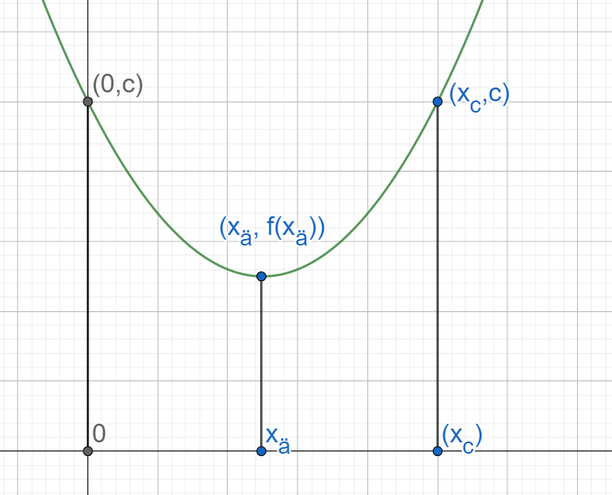

Toisen asteen polynomimalli
Contents
Toisen asteen polynomimalli¶
Toisen asteen polynomimalli on muotoa \(y=ax^2+bx+c\). Tällaisen mallin kuvaama asia ei kasva tai pienene tasaisesti, vaan kasvu- tai pienenemisnopeus vaihtelee. Lisäksi mallilla on jokin minimi- tai maksimikohta. Tällaiset matemaattiset mallit liittyvätkin usein tapauksiin, joissa halutaan löytää yhtälön kuvaamalle ilmiölle mahdollisimman pieni tai suuri arvo.
Funktion muoto ja ääriarvot¶
Funktion kuvaaja on ylöspäin aukeava paraabeli (”kuoppa”), jos \(a>0\), ja alaspäin aukeava paraabeli (”mäki”), jos \(a<0\). Ylöspäin aukeavalle paraabelille voidaan löytää pienin mahdollinen arvo (”kuopan pohja”), ja alaspäin aukeavalle paraabelille voidaan löytää suurin mahdollinen arvo (”mäen huippu”).
Minimi- tai maksimikohdan x-koordinaatti voidaan laskea yhtälöstä
\(2ax+b=0\)
ja vastaava minimi- tai maksimiarvo y saadaan sijoittamalla kyseinen x:n arvo polynomimallin lausekkeeseen. Kyseistä \(x\):n arvoa sanotaan funktion ääriarvokohdaksi (tai minimikohdaksi tai maksimikohdaksi) ja vastaavaa polynomin arvoa funktion ääriarvoksi (tai minimiarvoksi tai maksimiarvoksi).
Ääriarvon voi laskea myös suoraan kaavalla \(y=c-\frac{b^2}{4a}\).
Laskukaavojen perustelu

Kuvassa vihreällä on toisen asteen polynomifunktio \(f(x)=ax^2+bx+c\). Selvästi funktiolla on ääriarvo (tässä tapauksessa pienin mahdollinen arvo) \(f(x_ä)\) ja tämän arvon funktio saa, kun \(x=x_ä\).
Ääriarvokohta \(x_ä\) on puolivälissä niitä pisteitä, joissa funktion arvo on \(c\). (Myös mikä tahansa muu arvo kelpaisi, mutta \(c\) selviää heti funktion lausekkeesta!) Etsitään siis pisteet \(x_c\), joissa funktion arvo on \(c\), ratkaisemalla yhtälö \(ax_c^2+bx_c+c=c\):
\(ax_c^2+bx_c=0\)
\(x_c (ax_c+b)=0\)
Tulon nollasäännön perusteella \(x_c=0\) tai \(ax_c+b=0\). Ensimmäinen vaihtoehto ei kelpaa vastaukseksi, sillä jo funktion lausekkeesta tiedetään, että funktion arvo on \(c\), kun \(x=0\). Ratkaisu saadaan siis yhtälöstä \(ax_c+b=0\):
\(ax_c=-b\)
\(x_c=-b/a\)
Ääriarvokohta \(x_ä\) on keskiarvo luvuista \(0\) ja \(x_c\):
\(x_ä=\frac{0+x_c}{2}\)
\(x_ä=-\frac{b/a}{2}=-\frac{b}{2a}\)
Siis polynomifunktion ääriarvo (funktion muodosta riippuen joko minimi- tai maksimiarvo) saadaan, kun sijoitetaan funktion lausekkeeseen luvun \(x\) paikalle \(-\frac{b}{2a}\). Tällöin funktion ääriarvo (siis joko pienin tai suurin mahdollinen arvo) on
\(f(x_ä)=a\cdot (-\frac{b}{2a} )^2+b(-\frac{b}{2a})+c\)
\(f(x_ä)=\frac{a\cdot b^2}{4a^2}-\frac{b^2}{2a}+c\)
\(f(x_ä)=\frac{b^2}{4a}-\frac{b^2}{2a}+c\)
Lavennetaan termi \(-\frac{b^2}{2a}\) luvulla 2:
\(f(x_ä )=\frac{b^2}{4a}-\frac{2b^2}{4a}+c\)
Yhtälö sievenee muotoon \(f(x_ä)=-\frac{b^2}{4a}+c\).
Esim. Mikä on funktion \(y=-2x^2+3x+10\) suurin tai pienin mahdollinen arvo, ja millä \(x\):n arvolla se saadaan?
Ratkaisu
Funktiolla \(y=-2x^2+3x+10\) on maksimiarvo, sillä kerroin \(-2\) on pienempi kuin nolla.
Maksimi saavutetaan pisteessä, jossa \(2\cdot (-2)\cdot x+3=0\) eli \(-4x+3=0\), josta saadaan \(x=\frac{3}{4}\).
Kyseisessä pisteessä funktion arvo on \(y=-2\cdot(\frac{3}{4})^2+3\cdot \frac{3}{4}+10=11.125\). Sama arvo saadaan myös laskemalla \(y=10-\frac{3^2}{4\cdot(-2)}=10-(-\frac{9}{8})=10+\frac{1}{8}=11.125\).
Esim. Uuden puhelinmallin hinta on \(x\) €, ja valmistuskulut 50 €. Markkinatutkimuksen mukaan puhelimien myynti riippuu hinnasta lausekkeen \(50 000-100x\) mukaisesti. Millä myyntihinnalla saisi maksimituoton?
Ratkaisu
Kirjoitetaan ensin yhtälö, joka kuvaa myynnistä saatavia tuloja. Myyntitulot saadaan kertomalla yhden puhelimen hinta myytyjen puhelinten lukumäärällä, siis \(x(50000-100x)\). Tämä voidaan sieventää muotoon \(50000x-100x^2\).
Vastaavat valmistuskulut saadaan kertomalla yhden puhelimen valmistuskulut puhelinten lukumäärällä. Kulut ovat siis \(50\cdot(50000-100x)=2 500 000-5000x\).
Tuotto \(y\) saadaan, kun vähennetään kulut tuloista: \(y=50 000 x-100x^2-2 500 000+5000 x=-100x^2+55 000x-2 500 000\)
Tämän funktion maksimikohta saadaan yhtälöstä \(2ax+b=0\) eli \(-2⋅100\cdot x+55 000=0\), josta ratkeaa \(x=\frac{-55 000}{-200}=275\). Hinnan pitäisi siis olla 275 €. Tällöin tuotto on \(y=-100\cdot 275^2+55 000\cdot275-2 500 000=5 062 500\).